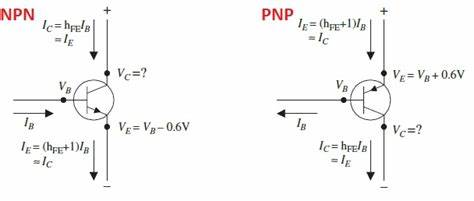

📖 ট্রানজিস্টর কী?

ট্রানজিস্টর সেমিকন্ডাক্টর ডিভাইস যা সিগন্যাল পরিবর্ধন এবং সুইচিং এর জন্য ব্যবহৃত হয়।
⚙️ ট্রানজিস্টরের প্রকারভেদ
- ⚪ **BJT (Bipolar Junction Transistor)**
- ⚪ **FET (Field Effect Transistor)**
💡 প্রয়োগ
- 🔊 অডিও পরিবর্ধক।
- 📡 রেডিও ট্রান্সমিটার।
📊 সূত্র
\( I_c = β I_b \)
